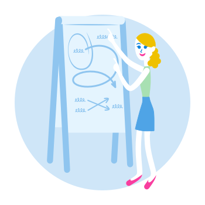

Synthesize
Once your testing is complete, t's time to build a summary of your learnings and key insights to bring back to your team. The end result of all user testing should be help you validate or dispel your assumptions. Your testing should help create insights that you, and your team, can react to and use it to decide whether the problem has been solved.
Who's involved:
- UX Designer, Product Manger
Timeline:
- 30mins (Individually) 60mins (w/ your team)
Output:
- Final direction to ship or new hypothesis/revised problem statement to be tested next week
Step-by-step
Gather your notes and recordings
After testing is complete, it’s time to quickly go over your notes and videos to find user behaviour that helps either validate, or disprove your hypothesis, as well as surfacing any other usability issues
- Do an audit of the tools you've used to record your feedback (Trello, Evernote, Invision comments, notebook scribbles, Video recordings etc.)
- Gather all your feedback from multiple sessions in one place. Evernote is a great tool for this!
- For info read: How MailChimp uses Evernote to gather research data
Tips:
- Make video clips of key moments – Silverback and Usertesting.com make it easy to do this
- Summarize the key moments for each user, and find patterns between them
- Patterns can help validate or disprove assumptions (ie. 3/5 users did not click the button)
- Refer to your tagged notes to help organize and group key observations
Share your learnings in Design circle Your tribe is often your most valuable asset.
Every Thursday we share these learnings as soon as we finish with our testing. This way, the sessions and key moments are fresh in our minds when we report them to the team.
Tips:
- Try to focus your testing feedback on the current hypothesis when presenting. Make note of other usability issues, and bring them up with the team if time allows.
- Ensure all stakeholders are aware of the context behind the results – ie. the specific scenario, tasks, questions asked
- Video clips of key moments can also help bring more context to those who weren't able to attend the session.
Plan out your next steps
Sometimes a single UX cycle will uncover that what you're testing might need to be broken down into small pieces, or have the problem statement revisited the following week.
Tips:
- Summarize the group's feedback and confirms direction necessary to ship or revise problem statement or hypothesis
- Do we need to bring this problem back into a design sprint next week? Or does this solution provide enough value for customers to ship?